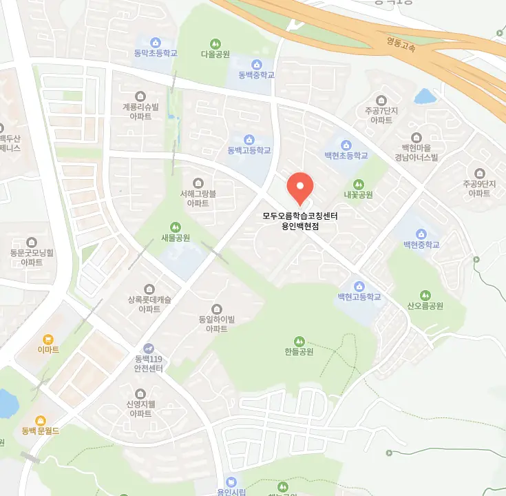

용인백현마을 영어국어학원을 고를 때는 먼저 교육 목표를 명확히 해야 해요. 부모님은 자녀의 현재 실력과 향후 진로를 함께 고민해요. 주변 환경은 교통 편의성과 주변 용인백현마을 영어국어학원가 밀집도를 살펴보는 것이 좋답니다. 강사진은 전공 경력과 지도 스타일을 직접 확인해 보는 것이 도움이 돼요. 수업 시간표는 아이가 집중할 수 있는 최적의 시간대를 선택해야 해요. 비용 구조는 숨은 추가 비용이 없는지 꼼꼼히 따져보는 것이 중요해요. 체험 수업은 실제 진행 방식을 직접 체감할 수 있는 좋은 기회니 적극 활용해요. 마지막으로 학부모 후기와 졸업생 성과를 비교해 보면 선택에 확신을 가질 수 있어요.
용인백현마을은 초등학교와 중학교가 인접해 있어 학생들의 이동이 원활하고, 학부모들 사이에 교육에 대한 관심이 높아요. 초등 저학년은 생활 속 경험을 통해 기초 개념을 잡는 것이 중요하고, 교재는 그림과 놀이를 활용해 흥미를 유발해요. 초등 고학년은 기본 원리를 바탕으로 응용 문제를 풀면서 사고력을 키우는 단계이며, 선생님은 단계별 피드백을 제공해요. 중학생은 교과서 중심 심화 학습과 함께 시험 유형 분석을 병행해 실전 감각을 기르는 것이 핵심이에요. 고등학생은 대학 입시 전문 과목별 전략을 세우고, 모의고사 결과를 기반으로 약점 보완을 집중해요. 전체 학년을 아우르는 특성으로는 가정 학습과 연계 가능한 자료가 풍부하고, 용인백현마을 영어국어학원과 학교 간 협력이 활발해 학습 효율을 높일 수 있어요.
와와학습코칭센터는 아이가 매일 개별 목표를 얼마나 잘 이행했는지 선생님과 함께 공유하는 시간을 가져서 성취감을 높여줘요. 수학 과정의 수강료는 중등 비가 삼십일만 원, 중등 씨가 삼십팔만 원으로 책정되어 있어 부담 없이 시작할 수 있답니다. 어려운 수학 개념도 아이가 좋아하는 재미있는 요소로 각색해서 설명해 주니 지루할 틈이 없고, 실제 학습 데이터를 근거로 성취도를 보여줘서 아이가 자신감을 갖게 되더라고요. 단순히 문제만 많이 푸는 게 아니라 왜 배우는지를 알려주는 진짜 코칭을 받고 싶다면 이곳이 딱 맞아요.
| 학원명 | 와와학습코칭학원 |
| 수강료 | 수학(중등B) 310,000원 | 수학(중등C) 380,000원 |
CURRICULUM
수업 시작 전에는 핵심 용어와 공식 암명을 체크하고, 이해 수준을 빠르게 파악해요. 이후 이차방정식의 판별식을 활용해 문제 풀이 전략을 단계별로 설명하고, 실제 예제로 적용해 보는 시간을 갖습니다. 개념 설명 뒤에는 바로 유사 문제를 풀게 해서 기억을 강화하고, 풀이 과정을 스스로 정리하도록 유도해요. 매주 진행되는 복습 시간에는 이전에 배운 내용을 짧게 요약하고, 오답 노트를 함께 검토해 학습 공백을 메우는 것이 특징이에요.
수학 객관식에서 자주 발생하는 실수는 문제를 읽는 데 소홀하거나, 계산 순서를 놓치는 경우가 많아요. 이런 오류를 줄이기 위해서는 먼저 문제를 정확히 파악하고, 풀이 과정을 단계별로 적는 습관을 길러야 해요. 또한 자기 주도 학습 마인드셋을 형성하려면 목표를 구체적으로 설정하고, 매일 일정 시간을 투자해 꾸준히 연습하는 것이 중요해요. 용인백현마을 영어국어학원에서는 온라인 질문 게시판을 운영해 즉각적인 답변을 제공하고, 정기적인 피드백을 통해 실수 유형을 분석해 개선 방안을 제시해요. 이런 체계적인 지원이 학생들이 점수를 꾸준히 올리는 데 큰 도움이 된답니다.
아이는 실수를 통해서 성장한다는 믿음을 바탕으로 운영 철학을 설정하고 있어요. 수업 내에서 일어나는 변화를 추적하는 시스템과 상담 루틴을 꼼꼼하게 구성해 놓았답니다. 수업 집중력이 상승했다는 결과를 공유하며 아이를 칭찬해 주는 과정을 거쳐요. 문장 중간에 쉼표를 적절히 넣어서 템포를 조절하는 중단 기법을 사용하기도 해요. 학습 동기를 유지하는 전략을 스스로 세울 수 있도록 격려하고 도와주는 것이 핵심이에요.
중학교 2학년 학생에게 특히 적합해요. 필기는 열심히 하지만 개념 연결이 부족한 경우에 효과적이에요. 공부 환경이 정리되지 않아 집중이 흐트러지는 학생에게 도움을 줘요. 자기 주도 학습 능력을 키우고 싶어 하는 아이에게 맞아요. 학습 습관을 체계적으로 바꾸고 싶은 경우에 권장돼요.
우리 아이가 다니는 용인백현마을 영어국어학원은 조용하고 정돈된 분위기라 공부하는 내내 편안함을 느껴요. 부모님은 교사의 유연한 수업 방식이 아이의 학습 스타일에 맞춰진 점에 만족해요. 전문가들은 교재와 문제집을 적절히 섞어 효율적인 학습이 가능하다고 평가해요. 학생은 교사가 부모님의 질문에 차분히 논리적 근거를 들어 답해 주는 모습이 신뢰감을 주어요. 우리 가족은 문제 하나하나에 아이의 실수가 반영돼 성장 과정을 직접 확인할 수 있어요. 보호자는 정기적인 피드백을 통해 아이의 학습 진행 상황을 명확히 파악하고 있어요. 교육자는 용인백현마을 영어국어학원에서 제공하는 맞춤형 과제가 실력 향상에 큰 도움이 된다고 말해요. 학습자는 수업이 끝난 뒤에도 스스로 복습하고 싶어 하는 의욕을 보여요. 우리 아이는 학습 목표를 달성하면서 자신감도 함께 높아지는 것을 느껴요. 전체적으로 용인백현마을 영어국어학원의 체계적인 관리와 따뜻한 지원이 아이의 성장에 큰 힘이 돼요.